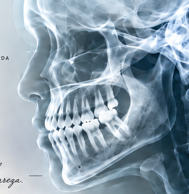
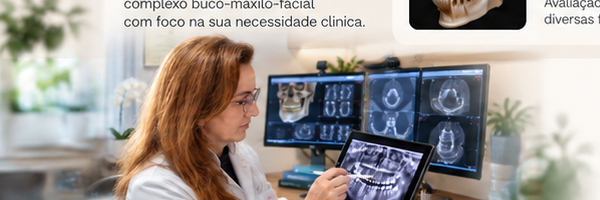

Um processo simples e seguro
para sua rotina clínica.
Interpretação de imagens do complexo buco-maxilo-facial com foco na sua necessidade clínica.
Avaliação detalhada para diversas finalidades clínicas.
Análise criteriosa e emissão de laudos com enfoque clínico.
Suporte profissional para auxiliar em casos desafiadores.

Atuação focada na interpretação de imagens do complexo buco-maxilo-facial, com compromisso com a qualidade, clareza nos laudos e apoio à tomada de decisão clínica.
Acesse nossa plataforma e conte com interpretação especializada.